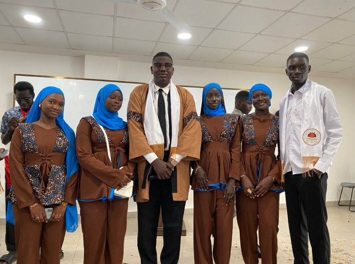
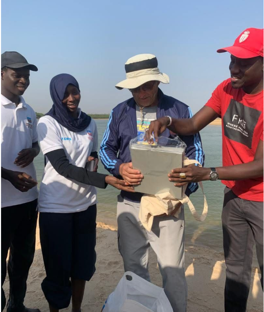
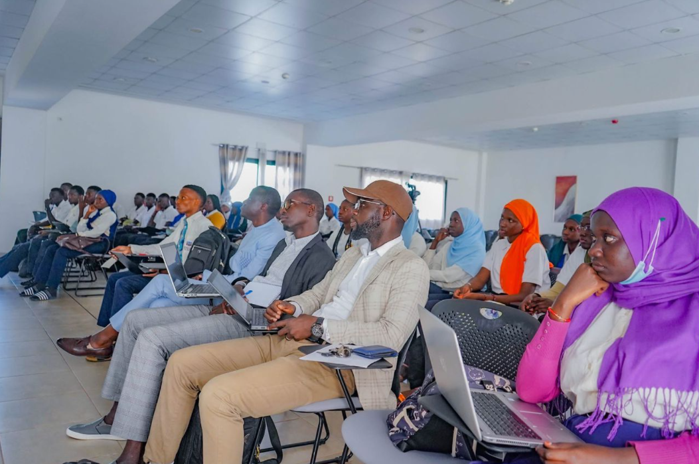

Les activités de l'UFR Sciences et Technologies Avancées
L'UFR STA organise tout au long de l'année des compétitions, journées scientifiques, conférences, visites pédagogiques et présentations de projets afin de développer les compétences académiques, scientifiques et professionnelles des étudiants.
Découvrir les activitésExcellence
Valorisation des meilleurs étudiants et des projets innovants.
Collaboration
Des activités favorisant le travail d'équipe et le partage d'expériences entre les départements.
Innovation
Présentation des réalisations scientifiques et technologiques des étudiants.
Les grandes activités de l'UFR STA
Découvrez les principales manifestations scientifiques, pédagogiques et culturelles organisées par l'UFR.

ExcellenceJournée d'Excellence de l'UFR STA
Une journée consacrée à la célébration de l'excellence académique avec des conférences, des expositions de projets, des démonstrations scientifiques ainsi qu'une cérémonie officielle de remise des distinctions aux meilleurs étudiants.
- Remise des prix aux majors de promotion.
- Présentation des meilleurs projets étudiants.
- Exposition scientifique des différents départements.
- Rencontre entre étudiants, enseignants et partenaires.
 Compétition
Compétition
Compétition de Génie en Herbe Inter-Départements
Cette compétition met en opposition les étudiants des différents départements de l'UFR STA autour d'épreuves de mathématiques, informatique, physique, culture scientifique et logique. Les équipes qualifiées disputent une grande finale et les vainqueurs sont récompensés lors de la Journée d'Excellence.
Retour
PédagogieSortie pédagogique des étudiants de SML
Les étudiants de Sciences de la Mer et du Littoral effectuent une visite pédagogique ou ecole de terrain sur la lagune de la Somone; un géosysteme naturel a Mangrove situé sur la Petite cote du senegal.
Retour Innovation
Innovation
Présentation des projets IoT des étudiants de L3 Informatique
Les étudiants présentent leurs projets de fin de semestre en Internet des Objets : maison intelligente, station météo, agriculture intelligente, sécurité connectée et systèmes automatisés utilisant des cartes Arduino et ESP32.
En savoir plus
ConférenceConférence scientifique
En Avril 2025, Dr Isabelle BRENON a animé une conference scientifique a UAM , en partenariat avec l'ufr STA sur les systemes littoraux semi-fermés tels que les baies ...
En savoir plusParticipez à la vie de l'UFR STA
Les activités organisées par l'UFR Sciences et Technologies Avancées offrent aux étudiants l'opportunité de développer leurs compétences, d'élargir leurs connaissances et de vivre une expérience universitaire enrichissante.
Nous contacter